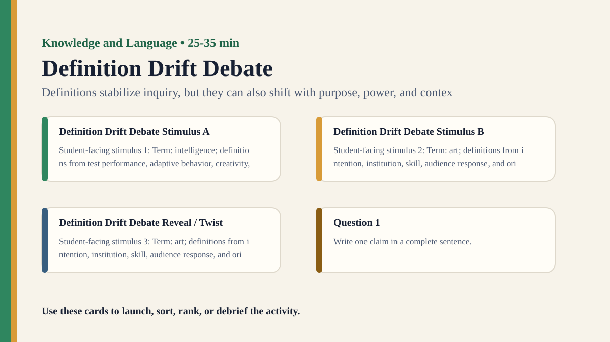

Detailed activity
Definition Drift Debate
Students trace how a key term changes across contexts and debate whether changing definitions change knowledge.
Free classroom activity
Big Idea
Definitions stabilize inquiry, but they can also shift with purpose, power, and context.
Teacher Summary
Students examine how definitions shape disagreement and evidence standards.
Use one flexible word to show that language can create, resolve, or hide knowledge problems.
Materials
- Definition cards for one term across dictionaries, institutions, everyday use, and specialist fields.
- Debate role cards.
Ready to run
Classroom Resource Pack
Use the printable pack for concrete stimulus cards, a student recording sheet, teacher prompts, and a visual prompt image.
Visual Prompt

Student Prompt
Inspect the Definition Drift Debate stimulus. Record one first claim, the evidence you used, your confidence, and what would make you revise.
Actual Lesson Questions
| # | Question for students | Teacher cue |
|---|---|---|
| 1 | Write one claim in a complete sentence. | Teacher cue: look for a clear claim, not just a description. |
| 2 | List two pieces of evidence. | Teacher cue: students should name visible words, data, source features, method features, or contextual clues. |
| 3 | Separate observation from interpretation. | Teacher cue: this is where assumptions, framing, models, or perspective usually appear. |
| 4 | Circle one confidence level and justify it. | Teacher cue: confidence is data for the debrief, not a grade. |
| 5 | Name one piece of missing information. | Teacher cue: push for method, source, context, comparison, or definitions. |
| 6 | Answer using the activity as evidence. | Teacher cue: students should move from the classroom example to a general TOK issue. |
Concrete Stimulus Packet
Stimulus
Framing Card
Neutral: “The school changed the assessment policy.” Loaded A: “The school quietly weakened standards.” Loaded B: “The school modernised assessment.” Loaded C: “The school admitted the old policy was unfair.”
Use this to make wording, implication, and emotional framing visible.Stimulus
Definition Drift Debate Example
Term: intelligence; definitions from test performance, adaptive behavior, creativity, social understanding, and problem-solving.
Use this as the activity-specific version of the stimulus.Stimulus
Comparison / Twist Card
Term: art; definitions from intention, institution, skill, audience response, and originality.
Reveal after students commit to their first judgement.Teacher Key / Reveal
The key move is not the “right answer”; it is the moment students see how definitions stabilize inquiry, but they can also shift with purpose, power, and context.
Setup Notes
- Pick one term with genuine but manageable ambiguity.
- Use a specific purpose for the debate, such as school policy, research, classification, or exhibition commentary.
Ready-to-Use Examples
- Term: intelligence; definitions from test performance, adaptive behavior, creativity, social understanding, and problem-solving.
- Term: art; definitions from intention, institution, skill, audience response, and originality.
Run Resources
- Definition comparison table: includes, excludes, evidence needed, who benefits.
- Borderline case cards that test each definition.
Procedure
- Choose a term such as intelligence, health, art, risk, fairness, or success.
- Groups receive different definitions and list what each definition includes and excludes.
- Students apply each definition to borderline examples.
- Groups debate which definition is most useful for a specific purpose.
- Debrief how definitions can shape what evidence counts.
Teacher Language
- A definition is doing work. What work is this definition doing?
- Which cases become easier or harder to know under this definition?
TOK Debrief Questions
- Knowledge question: Do definitions describe reality or help construct it?
- Who should have authority to define contested terms?
- When does changing a definition improve knowledge and when does it manipulate it?
Knowledge Questions
- Do definitions describe reality or help construct it?
- How do definitions shape evidence and disagreement?
- Who has authority over shared meanings?
Sample Student Output
- The test-score definition made measurement easy but excluded creativity.
- The definition changed what evidence counted as relevant.
Exhibition Object Idea
A set of competing definition cards for one contested term.
Adaptations
- Support: use two definitions and three cases.
- Challenge: ask students to identify power effects in definition choices.
Extension Tasks
- Students write a definition with a clear purpose and a named limitation.
- Compare definitions across two languages or institutions.
Teacher Notes
Pick a term that connects naturally to your current TOK unit or AOK.
The strongest discussion comes from asking what each definition makes easier or harder to know.